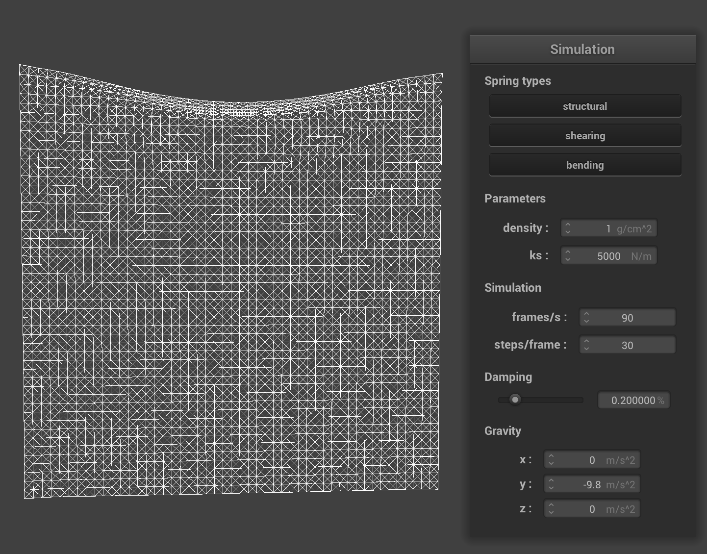

Project 4 Write-Up
Website: https://evelynwu88.github.io/cs184-proj4-website/
Overview
For this project, we implemented cloth simulation using a mass and spring
based system. We applied physical forces and numerical integration to
simulate the way cloth moves over time and handled various forms of
collisions including self-collision. Lastly, we implemented various
shaders, including diffuse shading, Blinn-Phong shading, displacement and
bump mapping, and environment-mapped reflections.
Part 1
For this part, we built a grid of masses and springs by first creating an
evenly spaced grid of masses, with num_width_points by num_height_points
total masses spanning width and height lengths. Then, we set the x, y, and
z coordinates and determine whether the point mass is pinned. Then, we
created springs to apply the structual, shear, and bending constraints
between point masses.
-
Take some screenshots of scene/pinned2.json from a viewing angle where
you can clearly see the cloth wireframe to show the structure of your
point masses and springs.

-
Show us what the wireframe looks like (1) without any shearing
constraints, (2) with only shearing constraints, and (3) with all
constraints.
Without shearing:
Only shearing:
All constraints:
Part 2
In part 2, we implemented the simulate function that applies forces on our
cloth's point masses to simulate movement from one time step to the next.
We took into consideration of 2 kinds of forces: external forces and
spring correction forces. First, for each point pass, we computed a total
external force based on the external_accelerations and the mass (F = ma).
Next, for each spring, if the spring's constraint type is enabled, we
computed the force applied to the two masses on its ends using Hooke's
law.
After computing the total force acting on each point
mass, we used Verlet Integration to compute new point mass positions. The
exact formula is attached on the specs. For each point mass, we updated
the `position` if the point mass is not pinned and store the previous time
step's position in `last_position`.
Lastly, we applied constraints to point mass updates such that
the spring's length is at most 10% greater than its `rest_length` at the
end of any time step. In the regular case, we apply half the constraints
to each point pass. If one point is pin, we apply correctly to only the
unpinned point. And if both points are pinned, we do nothing.
-
Describe the effects of changing the spring constant ks; how does the
cloth behave from start to rest with a very low ks? A high ks?
As we increase the ks, the cloth becomes less elastic and has more
resistant to stretching and bending. From start to rest, for ks = 500
N/m, the cloth is most droopy and the least resistant to gravitational
force or movement. It is the most elastic and bouncy. It becomes
stiffer as we increase the ks = 5000 N/m and very stiff as ks = 50000
N/m, as you can see in the screenshots.
ks = 500 N/m:
ks = 5000 N/m:
ks = 50000 N/m:
-
What about for density?
Density affects how heavy each point mass is and behaves inversely
proportional to ks. At low density, the point masses are the lightest,
and the the gravitational force acting on them are the least, which
explains why there is least sag. As we increase density, we gradually
see a larger sag in the cloth.
density = 1 g/cm^2:

density = 15 g/cm^2:
density = 50 g/cm^2:
-
What about damping?
Damping results in a decay in motion and brings the system to an
equilibrium, so when damping = 0%, the cloth sways really fast back
and forth, as there is no net loss of energy in the system. As we
increase damping to 0.5%, the cloth falls slower as it is more
resistant to movement. It also stops at an equilibrium position rather
fast.
damping = 0.0%:
damping = 0.5%:
-
Show us a screenshot of your shaded cloth from scene/pinned4.json in
its final resting state! If you choose to use different parameters
than the default ones, please list them.

Part 3
In part 3, we implemented the collide method, which bumps the point mass’s
position outside the primitive’s surface if we determined that it is
inside the primitive.
For sphere, we first computed the intersection point of point mass with
the sphere by extending its trajectory. We then computed correction vector
needed to be applied to last_position to reach this point. Lastly, we set
position = last_position while taking into account of friction, scaling by
(1-f).
For plane, we took a similar approach, but when computing the correction
vector, we made sure that the point mass’s last_position should reach a
point slightly above the intersection point, on the same side of the
plane.
-
Show us screenshots of your shaded cloth from scene/sphere.json in its
final resting state on the sphere using the default ks = 5000 as well
as with ks = 500 and ks = 50000. Describe the differences in the
results.
As we decrease the ks value, the cloth becomes more droopy and less
resistant to gravitational source. You can see that at ks=500, the
cloth drapes down the most, and at ks=50000 the cloth does not even
cover the entire sphere, as it is stiffer and more resistant to the
external forces pulling it down.
ks = 500 N/m:
ks = 5000 N/m:
ks = 50000 N/m:
-
Show us a screenshot of your shaded cloth lying peacefully at rest on
the plane. If you haven't by now, feel free to express your colorful
creativity with the cloth! (You will need to complete the shaders
portion first to show custom colors.)
Part 4
In part 4, we handled self-colision by implementing spatial hashing in the
`Cloth::hash_position`, `Cloth::build_spatial_map`, and
`Cloth::self_collide` methods.
In hash_position, we partitioned the 3D space into 3D boxes with
dimensions w ∗ h ∗ t where w = 3 * width / num_width_points, h = 3 *
height / num_height_points, and t=max(w,h). With the new coordinates, we
computed a unique number that corresponds to those 3D coordinates.
In build_spatial_map, we loop over all point masses and use the
Cloth::hash_position method to populate the map.
In self_colide, we look up point masses that could potentially collide
with this point mass using the hash table. If the pair is within
2∗thickness distance apart, we compute a correction vector to be applied
to the point mass to maintain the 2∗thickness distance. Lastly, we average
all possible correction vectors for this point mass and divide it by
simulation_steps.
-
Show us at least 3 screenshots that document how your cloth falls and
folds on itself, starting with an early, initial self-collision and
ending with the cloth at a more restful state (even if it is still
slightly bouncy on the ground).
Early, initial self-collision:
Middle:
More restful state:
-
Vary the density and describe with words and screenshots how they
affect the behavior of the cloth as it falls on itself.
As the density of the cloth increases, the amount of folds at the
bottom of the cloth increases and the amount of folds at the top of
the cloth decreases. This is because as the density increases, it
experiences a larger gravitational force that pulls it downwards,
causing there to be less folds at the top of the cloth and more at the
bottom.
Density = 1 g/cm^2
Density = 15 g/cm^2
Density = 100 g/cm^2
-
Vary the ks and describe with words and screenshots how they affect
the behavior of the cloth as it falls on itself.
As ks increases, the amount of folds decreases. This is because a
higher ks means that the cloth is more stiff. For a cloth with a
larger ks, it is more difficult for it to form folds. For a cloth with
a smaller ks, it is less stiff so it can have a lot of folds.
ks = 100 N/m:

ks = 5000 N/m:
ks = 50000 N/m:
Part 5
In part 5, we implemented various shaders, including diffuse shading,
Blinn-Phong shading, displacement and bump mapping, and environment-mapped
reflections.
-
Explain in your own words what is a shader program and how vertex and
fragment shaders work together to create lighting and material
effects.
Shaders modify certain steps in the rasterization pipeline to create
lighting and material effects. Vertex shaders modify the triangle
processing stage, changing position and normal vectors of vertices,
which modifies the geometry of the scene. After that, fragment shaders
modify the fragment processing stage and add chromatic elements and
shades to fragments, which results in colors on pixels. Hence, they
work together to add lighting and material effects by modifying
different stages of the rasterization pipeline.
-
Explain the Blinn-Phong shading model in your own words. Show a
screenshot of your Blinn-Phong shader outputting only the ambient
component, a screen shot only outputting the diffuse component, a
screen shot only outputting the specular component, and one using the
entire Blinn-Phong model.
Blinn-Phong shading is a type of shader made up of different lighting
components, namely ambient, diffuse, and specular lighting. Ambient is
the most basic: it gives a uniform color and results in a matte
looking object. Diffuse lighting approximates how light bounces off
the surface in many directions. Specular lighting takes into account
the direct reflection of light off the surface and leaves a shining
finish. These 3 components give us the illusion of shades on objects.
Ambient only:
Diffuse only:
Specular only:
-
Show a screenshot of your texture mapping shader using your own custom
texture by modifying the textures in /textures/.
-
Show a screenshot of bump mapping on the cloth and on the sphere. Show
a screenshot of displacement mapping on the sphere. Use the same
texture for both renders. You can either provide your own texture or
use one of the ones in the textures directory, BUT choose one that's
not the default texture_2.png. Compare the two approaches and
resulting renders in your own words. Compare how your the two shaders
react to the sphere by changing the sphere mesh's coarseness by using
-o 16 -a 16 and then -o 128 -a 128.
Bump shading and displacement mapping both change the normal vectors
so that the cloth and the sphere seem to have bumps on the surface. In
displacement mapping, the vertex positions and also adjusts the normal
vectors to match the vertex positions.
Bump Mapping on the cloth and on the sphere:
Displacement Mapping on the sphere:
Changes to coarseness does not really affect bump shading. However,
for displacement shading, when the resolution of the sphere is high,
the sphere is more round (but still with some bumps due to the
modified vertex positions). When the resolution is low, the sphere is
not round and has a lot of sharp points.
Bump Mapping (low resolution on the left and high resolution on the
right):

Displacement Mapping (low resolution on the left and high resolution
on the right):
-
Show a screenshot of your mirror shader on the cloth and on the
sphere.